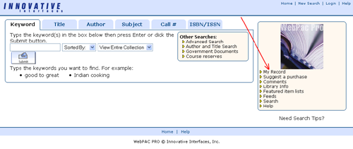

Fee Payment
|
You can now pay any fine over $2 online using your Visa or MasterCard.
Here is how to get started:
1. Log onto "MY ACCOUNT". Enter your name and library card number.
2. Select the amount in unpaid fines and bills.
3. Select "PAY ONLINE".
4. Select the fines that you wish to pay, complete all of the relevant information and click submit.
5. Next a confirmation page will appear. You can print a copy of your receipt at this time and/or click OK. If you have a valid email address, receipt of payment will be sent to the address you entered in step 4.
|
 |